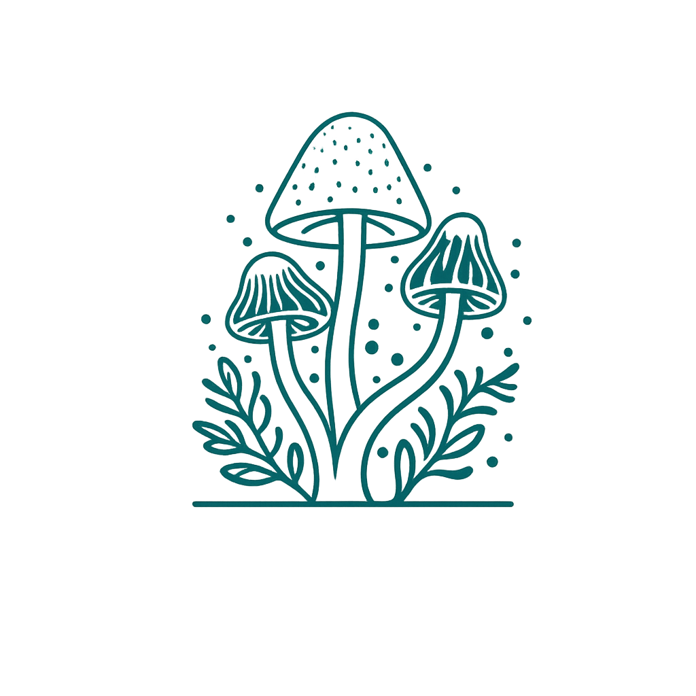
Discover. Identify. Explore Safely.
The offline-first field companion for mushroom, plant, tree, park, and trail discovery in Tennessee. Built for foragers who need reliable knowledge where there is no cell service.
Every species in ForageWise is sourced from Tennessee government and university extension data.
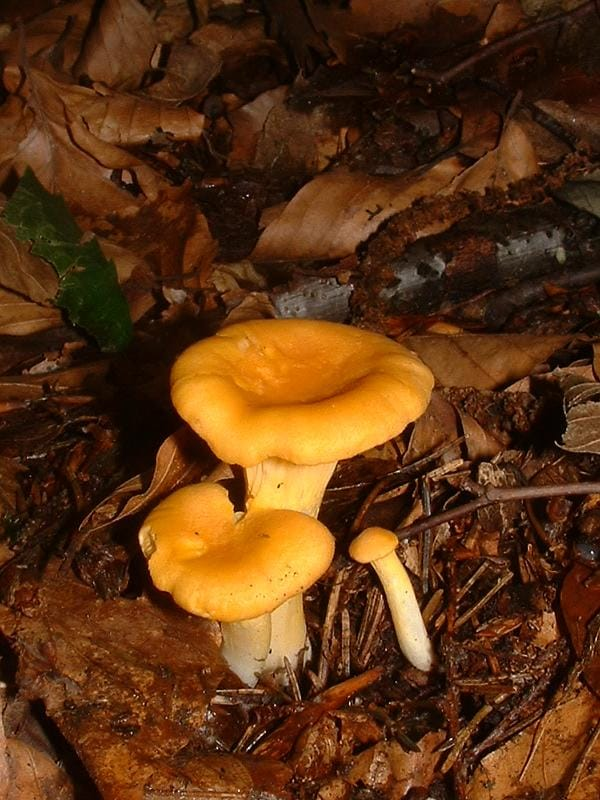
Chanterelle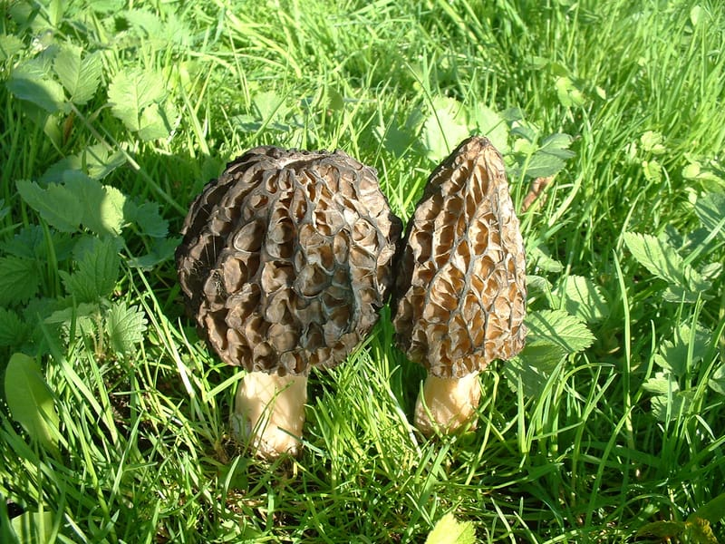
Morel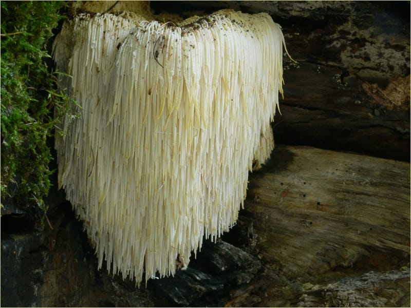
Lion's Mane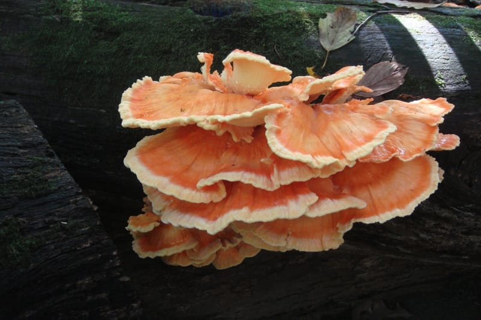
Chicken of the Woods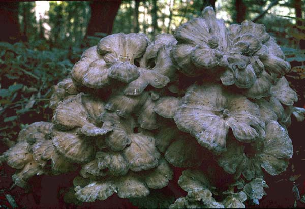
Hen of the Woods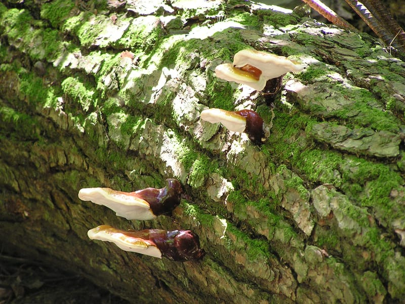
Reishi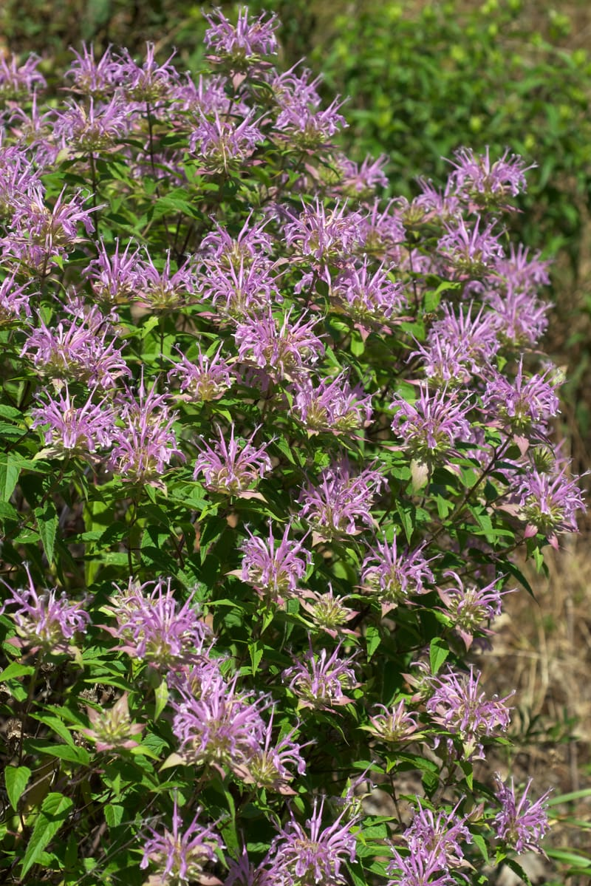
Wild Bergamot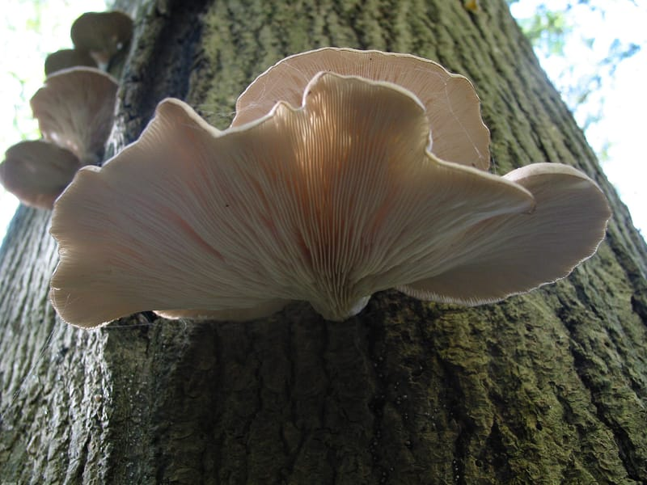
Oyster Mushroom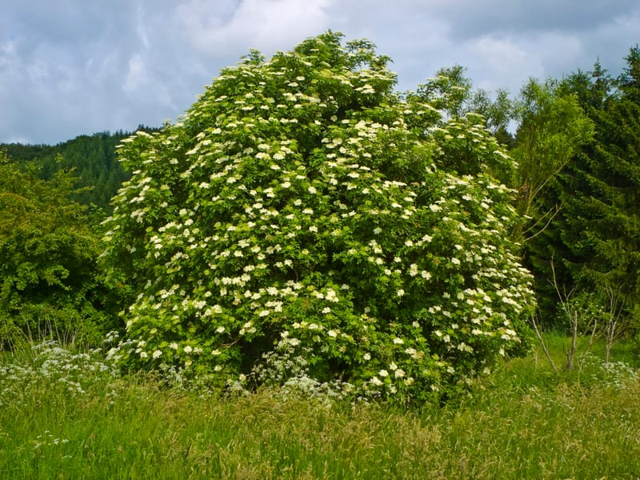
Elderberry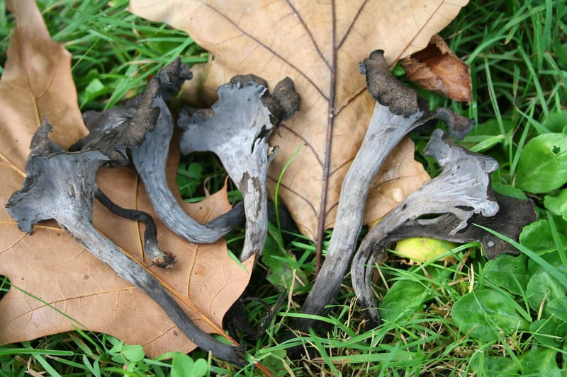
Black Trumpet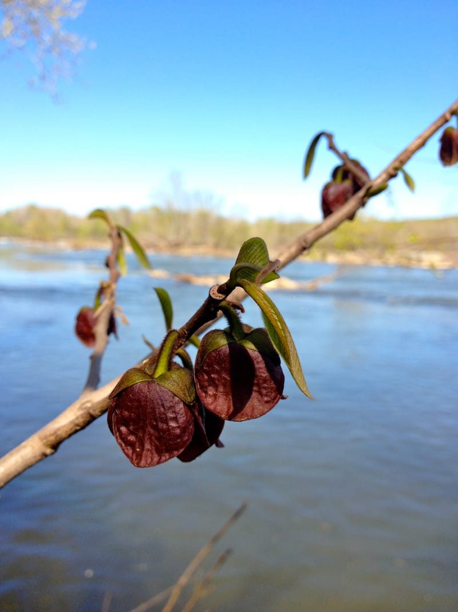
Pawpaw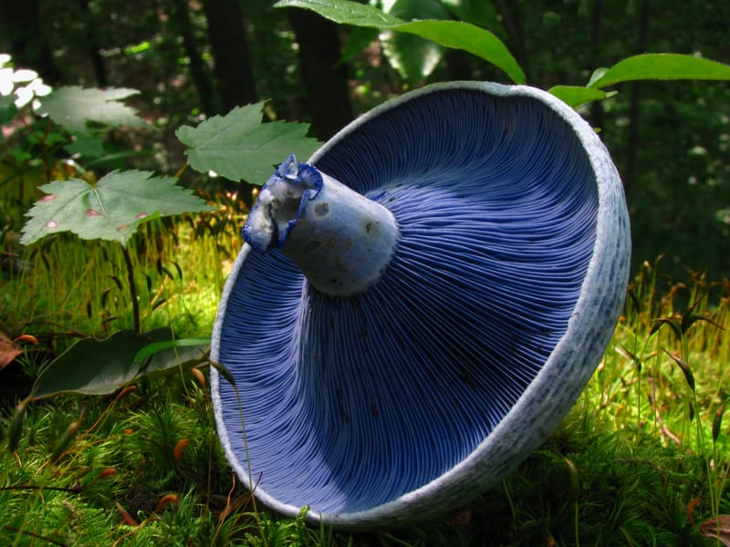
Indigo Milk Cap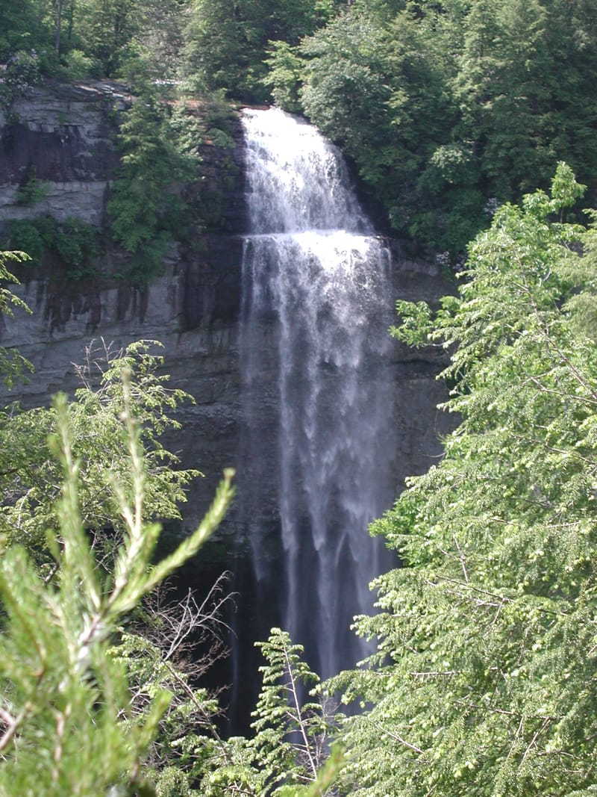
60+ state parks mapped with trails, foraging conditions, and trip planning tools.
Identification tools, mapping, trip planning, and community features in one offline-ready app.
30+ mushroom species, 16+ plants, and native trees with identification steps, images, and toxic lookalike warnings.
60+ Tennessee state parks with trail overlays, foraging condition filters, and real-time foraging scores.
See which species are in season each month with summaries, thumbnails, and Tennessee-specific foraging tips.
Upload 5 category-specific photos with guided angle prompts for more accurate identification results.
Plan multi-stop foraging trips with park selection, trail routing, and time estimates. All saved locally.
Share finds, browse what others have spotted, and connect with local foragers. Privacy-first with GPS fuzzing.
Bark and leaf close-up galleries, lookalike comparisons, and associated mushroom species for every entry.
Toggle and reorder homepage sections to match your foraging style. Layout persists offline.
Toxic lookalikes always shown first. Never says "safe to eat." Expert verification always required.
ForageWise never tells you something is "safe to eat." Every identification is a possible match that requires verification by a qualified expert. Toxic lookalikes are always shown prominently.
No signal on the trail? No problem. The entire Field Guide, saved trips, and downloaded map areas work without internet after your first visit.
Data is stored locally using IndexedDB and cached by a Service Worker. Open the app in airplane mode and everything is still there.
Free to use. No account required. Works on any device with a modern browser.